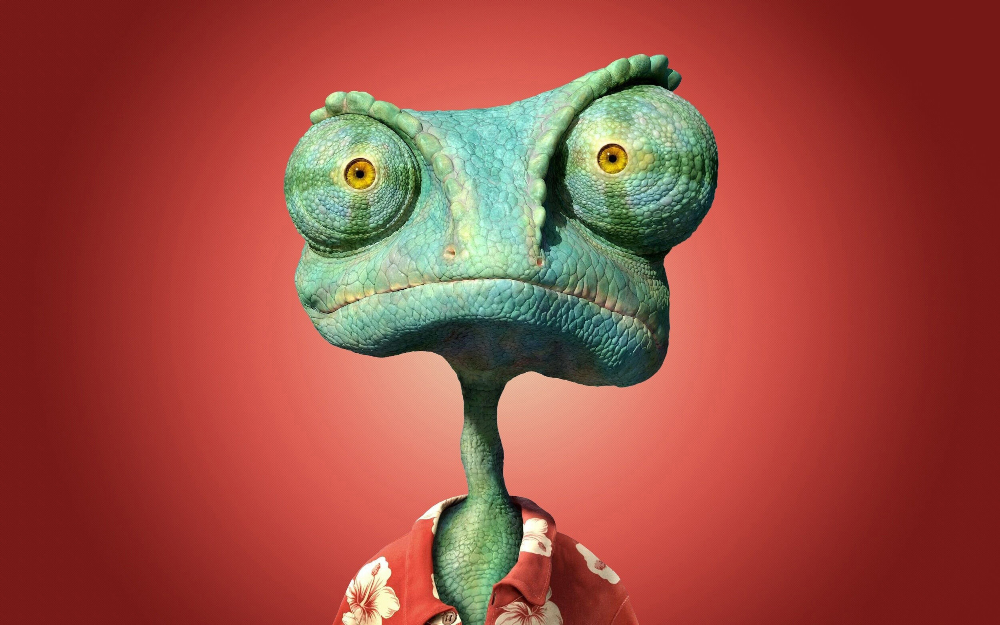

This report details the investigation into the subject known as "Charlie," who is suspected of being a member of a hidden reptilian race. This investigation was initiated following multiple eyewitness reports and anomalous behaviors observed in the subject. The following findings provide evidence supporting the hypothesis that Charlie may indeed be a lizard person.
The theory that a race of reptilian beings, known as "lizard people," secretly inhabits Earth has been a topic of discussion among conspiracy theorists for decades. These beings are believed to possess the ability to shapeshift and mimic human appearance, thereby infiltrating human society unnoticed.
Observations of Charlie have noted occasional instances of flaky skin. He claims it's due to acne medication, but it is likely because he is shedding his scales.
Photographic evidence has been obtained of Charlie in the process of transforming into a lizard person:
Charlie has continually researched and studied the art of acting and performance, likely to maintain his human disguise.
Charlie has extensive knowledge of historical events worldwide. It is speculated that he is identifying humanity's weaknesses to facilitate a future takeover by the lizard people.
He regularly practices fencing to prepare for a potential war between the lizard people and humans.
Charlie appears much older than his outward appearance suggests. Scientific estimations place his existence as far back as 1935. Photographs are rare, but one from Buckroe Beach Amusement Park in 1956 captures him:
There are very few recorded weaknesses for Charlie. Many conventional methods that harm humans, such as cyanide, arsenic, and radiation, have little to no effect on him. However, through extensive research, a few weaknesses have been identified:
#1 Ice Skates: When ice skates are placed on Charlie's feet, he loses all balance, and his bones become fragile like a baby bird.
#2 The Song "Cheer Up Charlie": This song causes him intense pain. An oscillating white noise in the background of the lyrics may be the cause.
#3 The Human Appendix: The mere sight of an appendix induces uncontrollable vomiting in Charlie. If ingested or implanted, it causes complete organ failure.
While the evidence gathered is circumstantial, it strongly suggests that Charlie may not be entirely human. The combination of physical, behavioral, and anecdotal evidence supports the hypothesis that Charlie could be a lizard person, or at the very least, possesses traits atypical of the average human.
Further surveillance and more rigorous scientific testing are recommended to confirm these findings. Extreme caution is advised, as direct confrontation may provoke an aggressive response from the subject.